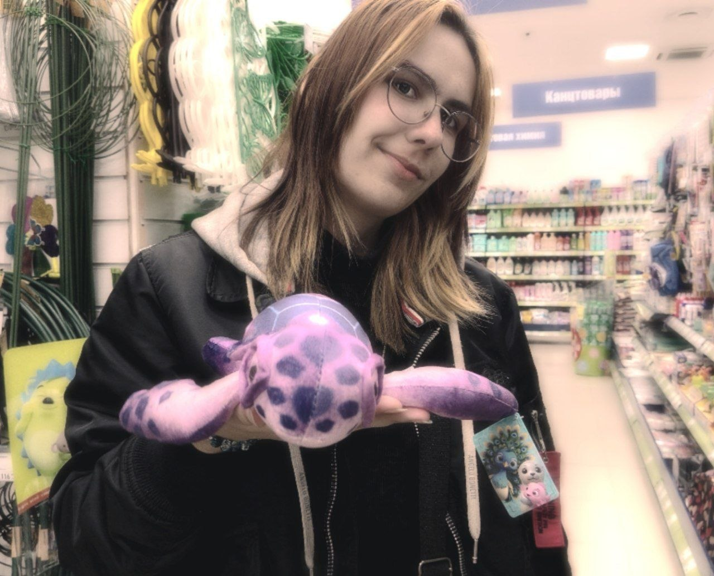
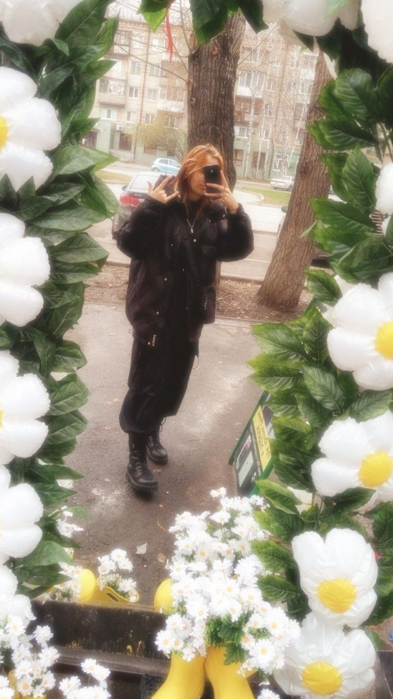

ОБО МНЕ
Это я ↓


Привет! Судя по тому, что Вы здесь, мне стоит представиться...
Я родом из села в Омской области. Там родилась, жила. Там я закончила 11 классов школы.
Затем поступила в техникум города Тюмени, где начала обучение по специальности «Информационные системы и программирование», а также познакомилась с очень классными ребятами-однокурсниками. Завела друзей.
Я многосторонняя личность. Люблю рисовать. Занимаюсь этим, кажется, всю свою жизнь, хаха... Я окончила даже три класса художественной школы на отлично. Рисование познакомило меня с моей лучшей подругой, с которой мы общаемся уже целых 6 лет.
Также я пишу стихи. Обычно в «стол», потому что не люблю привлекать внимание к своему творчеству.
А ещё мне нравится делать фотографии. К сожалению, я не обладаю профессиональной камерой, поэтому все они сделаны на телефон. Мне нравится запечатлевать моменты.
Вот как-то так. Несмотря на то, что я гуманитарий, дороги привели меня сюда.
Я рада, что сейчас нахожусь в нужном месте и в нужное время. Жизнь — это круто, и нужно ценить каждый её момент.
Спасибо за внимание, уделённое моему мини-представлению. :D